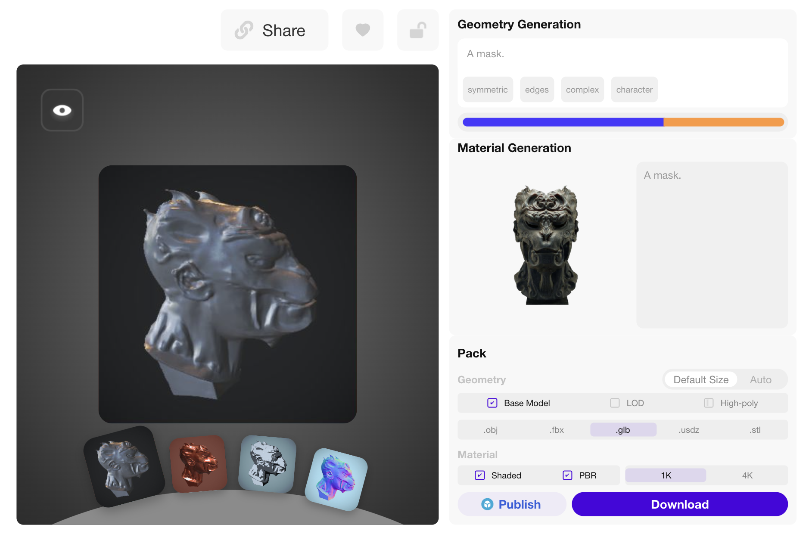

We evaluated a commercial product named Rodin via membership subscription on its website, which is based on the CLAY technique, since CLAY itself is not open-sourced.
It is worth noting that Rodin:
Despite these extensive resources and refinement steps, Rodin (Gen-1 RLHF V0.9) still:
Rodin Stage-1 |
Rodin Final |
Ours (1~2s) |
| Prompt: "A fragrant pine Christmas wreath" | ||
Rodin Stage-1 |
Rodin Final |
Ours (1~2s) |
| Prompt: "A faux-fur leopard print hat" | ||
Rodin Stage-1 |
Rodin Final |
Ours (1~2s) |
| Input Image + Prompt: "A sculpture" | ||
Rodin Stage-1 |
Rodin Final |
Ours (1~2s) |
| Input Image + Prompt: "A mask" | ||
Results of LATTE3D are taken from its project page.
Our results demonstrate competitive visual quality with less over-saturation compared to the SDS-based MVDream, while achieving significantly faster inference speed. Although our method is slightly slower than the feed-forward (non-generative) approach LATTE3D, it offers better alignment with text prompts.
Ours (1~2s) |
Results of GaussianDreamer are taken from its project page.
Our results demonstrate competitive visual quality with less over-saturation compared to the SDS-based GaussianDreamer, while achieving significantly faster inference speed. Similar to GaussianDreamer that use Shap-E to generate initial point clouds, our generated 3D Gaussians can also be used as input to the SDS-based methods for further refinement, which could be a promising direction for future research.
| GaussianDreamer (15min) | Ours (1~2s) | GaussianDreamer (15min) | Ours (1~2s) |
| Viking axe, fantasy, weapon, blender, 8k, HD |
Flamethrower, with fire, scifi, cyberpunk, photorealistic, 8K, HD | ||
| A freshly baked loaf of sourdough bread on a cutting board |
A zoomed out DSLR photo of an amigurumi motorcycle |
||
To evaluate the 3D consistency of our generated multi-view Gaussian latents, we take prompts from T3Bench or generated by ChatGPT that describe very thin objects. The results demonstrate that our method can generate 3D coherent multi-view splatter images for thin objects without obvious artifacts or distortions.
| A delicate battle axe with an ultrathin, sharp blade and an intricately carved wooden handle | A slender battle axe with a crescent-shaped blade and a long, narrow shaft | Coffee cup with many holes |
A rustic, weathered bookshelf with built-in storage compartments and ties of evenly shaped shelves |
| A sleek combat axe with a razor-edged blade and a slim, ergonomic handle designed for swift strikes | A shimmering emerald pendant necklace | A delicate, handmade lace doily |
An old bronze ship's wheel |
Text prompts are taken from T3Bench,
Instant3D and
LATTE3D.
Single-view images are taken from InstantMesh,
Era3D,
GPTEval3D and the Internet.
| A beautiful rainbow fish | A bright red fire hydrant | A brown horse in a green pasture | A colorful camping tent in a patch of grass |
| A fluffy, orange cat | A green enameled watering can | A green frog on a lily pad | A human skull |
| A jar of homemade jam | A lighthouse on a rocky shore | A plush velvet armchair | A red cardinal on a snowy branch |
| A red rose in a crystal vase | A silver mirror with ornate detailing | A small porcelain white rabbit figurine | A toy robot |
| A tree stump with an axe buried in it | A velvet cushion stitched with golden threads | A vibrant orange pumpkin sitting on a hay bale | A vintage porcelain doll with a frilly dress |
| A well-loved stuffed teddy bear | A worn-out red flannel shirt | An expensive office chair | An intricate ceramic vase with peonies painted on it |